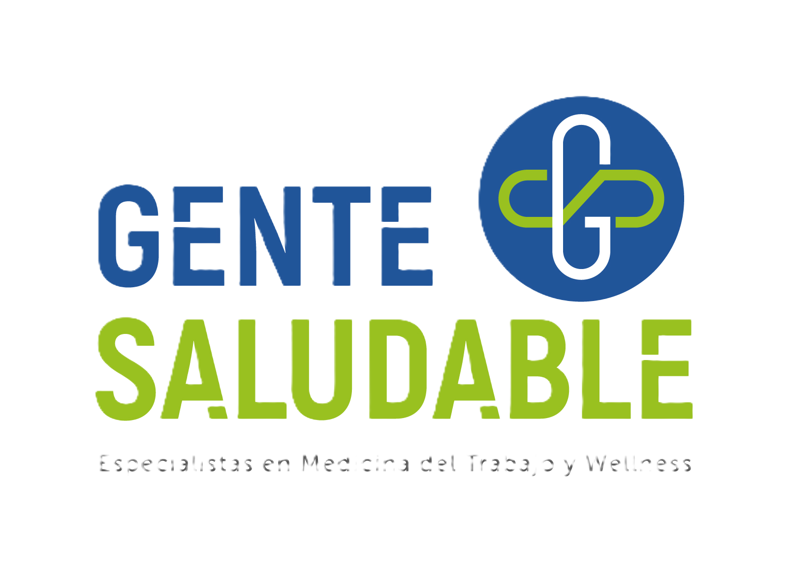

Cómo la SALUD MENTAL de la tripulación impacta directamente en la seguridad, productividad y rentabilidad neta de la flota en la Hidrovía.
Haz clic en cada cuadrante para revelar el impacto detallado
Gestión de la consecuencia vs. Gestión del riesgo
Las condiciones de aislamiento y las guardias 6/6 potencian los síntomas clínicos en la tripulación.
Seleccioná un diagnóstico para ver sus síntomas y la carga financiera asociada.
Haz clic en la primera ficha para ver el efecto dominó.
Transformando el Riesgo Psicosocial en Rentabilidad Operativa
Un programa integral de 4 pilares diseñado para intervenir de manera preventiva y reactiva en la salud mental de la tripulación, blindando el balance financiero de la empresa.
Intervención especializada en Trastornos de Ansiedad, Depresión y desgaste familiar (el síndrome de la 'Familia Acordeón'). Abordar la renuncia pasiva y la apatía permite que el tripulante recupere su capacidad de afrontamiento.
Capacitación en los principios 'Ver, Escuchar y Vincular' ante situaciones críticas, como accidentes a bordo o malas noticias en tierra.
Un canal de contención inmediata para crisis. La contención en tiempo real reduce reacciones impulsivas que podrían terminar en daños a la carga, a la maquinaria, a los demás o a sí mismo.
Herramientas psicoeducativas para gestión del estrés, higiene del sueño y hábitos saludables.
| Indicador de Respuesta | Sin PAP | Con PAP |
|---|---|---|
| Detección y contención inicial | Intervención basada en improvisación; puede empeorar la situación. | Presencia compasiva inmediata para estabilizar reacciones mediante escucha reflexiva. |
| Evaluación de urgencia (Triaje) | Riesgo de desperdiciar recursos sin distinguir estrés temporal de disfunción severa. | Triaje psicológico estructurado para priorizar atención por inestabilidad conductual o cognitiva. |
| Mitigación del estrés agudo | Las personas afectadas pueden empeorar, desarrollando reacciones impulsivas. | Tácticas específicas: orientación anticipatoria, reencuadre cognitivo y manejo del estrés. |
| Resolución y seguimiento | El incidente concluye sin directriz clara ni orientación sobre recursos de apoyo. | Acceso a atención continua; determina autonomía del individuo o derivación a nivel superior. |
"El conocimiento y aplicación de los PAP ayuda a las personas a recuperarse de la adversidad al estabilizar sus reacciones agudas y fomentar la resiliencia natural. El tratamiento de primera línea promueve menores tasas de síntomas invalidantes y mejor funcionamiento social décadas después del evento." ¹⁹
"Los PAP funcionan como un 'multiplicador de fuerza' que amplía la capacidad de respuesta psicológica dentro de la organización. Al capacitar una Brigada de Emergencia Interna, la empresa mejora su resiliencia organizacional ante incidentes críticos." ¹⁹
La contratación de cualquiera de nuestros servicios incluye, sin costo adicional, una Charla de Socialización On-Board o en Base.
Objetivo Estratégico: Presentar el programa frente a la tripulación para derribar el estigma cultural, explicar la garantía de confidencialidad y potenciar el uso del servicio clínico de manera preventiva. Aplica tanto para malestares fisiológicos como psicológicos.
Formato APA — Todas las fuentes citadas en esta presentación